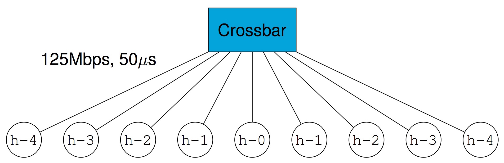
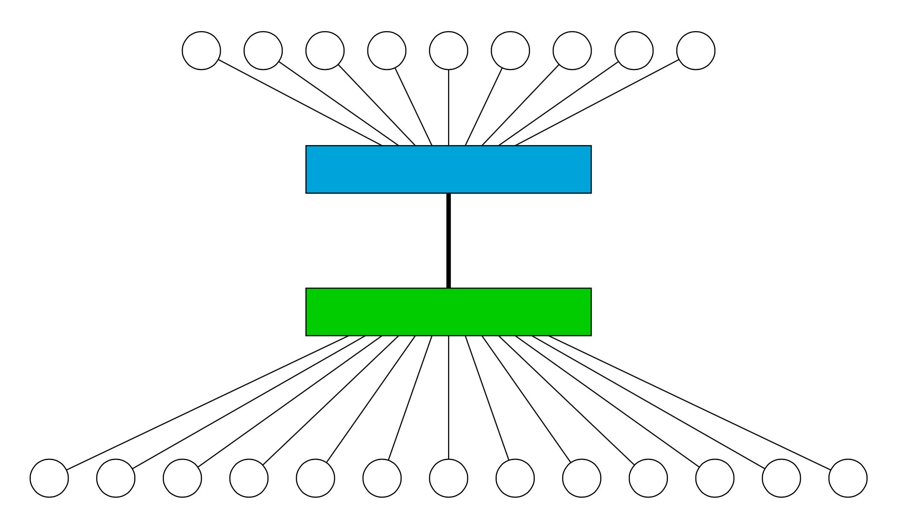

SMPI simulates the execution of MPI applications by relying on the fast and accurate simulation core provided by SimGrid. The SMPI user (you!) must describe simulated platforms (i.e., sets of simulated hosts and network links, with some performance characteristics). The SimGrid documentation provides ample information on platform descriptions, which are written in XML. Below we simply show a series of examples, which should be sufficient for our purpose. Note that platform files are typically provided in each pedagogic module, but you may have to modify them.
A simple 3-host example: At the most basic level, you can describe your simulated platform as a graph of hosts and network links. For instance:

<?xml version='1.0'?>
<!DOCTYPE platform SYSTEM "http://simgrid.gforge.inria.fr/simgrid/simgrid.dtd">
<platform version="4.1">
<zone id="AS0" routing="Full">
<host id="host0" speed="1Gf"/>
<host id="host1" speed="2Gf"/>
<host id="host2" speed="40Gf"/>
<link id="link0" bandwidth="125MBps" latency="100us"/>
<link id="link1" bandwidth="50MBps" latency="150us"/>
<link id="link2" bandwidth="250MBps" latency="50us"/>
<route src="host0" dst="host1"><link_ctn id="link0"/><link_ctn id="link1"/></route>
<route src="host1" dst="host2"><link_ctn id="link1"/><link_ctn id="link2"/></route>
<route src="host0" dst="host2"><link_ctn id="link0"/><link_ctn id="link2"/></route>
</zone>
</platform>
In the above XML, note the way in which hosts, links, and routes are defined. Note that all hosts are defined
with a power (i.e., compute speed in Gflops), and links with a latency (in us)
and bandwidth (in Mbit/sec). Other units are possible and written as expected.
By default, routes are symmetrical. See more information on the
SimGrid Web site.
This XML file is intended for SimGrid v3.21 or earlier. To
use it with more recent versions, you may have to convert it using the
simgrid_update_xml program, as follows:
simgrid_update_xml 3_hosts.xmlA homogeneous cluster with a crossbar switch: A very common parallel computing platform is a homogeneous cluster in which hosts are interconnected via a crossbar switch with as many ports as hosts, so that any disjoint pairs of hosts can communicate concurrently at full speed. For instance:

<?xml version='1.0'?>
<!DOCTYPE platform SYSTEM "http://simgrid.gforge.inria.fr/simgrid/simgrid.dtd">
<platform version="4.1">
<zone id="AS0" routing="Full">
<cluster id="my_cluster" prefix="host-" suffix=".hawaii.edu" radical="0-255" speed="1Gf" bw="125Mbps" lat="5us"/>
</zone>
</platform>
In the above XML, note that one simply specifies a name prefix and suffix for each host, and then give an integer range (in the example the cluster contains 256 hosts). All hosts have the same power (1 Gflop/sec) and are connected to the switch via links with same latency (5 microseconds) and bandwidth (125 Mbit/sec). See more information on the SimGrid Web site.
A homogeneous cluster with a shared backbone: Another popular model for a parallel platform is that of a set of homogeneous hosts connected to a shared communication medium, a backbone, with some finite bandwidth capacity and on which communicating host pairs can experience contention. For instance:

<?xml version='1.0'?>
<!DOCTYPE platform SYSTEM "http://simgrid.gforge.inria.fr/simgrid/simgrid.dtd">
<platform version="4.1">
<zone id="AS0" routing="Full">
<cluster id="my_cluster" prefix="host−" suffix=".hawaii.edu" radical="0−255" speed="1Gf" bw="125Mbps" lat="50us" bb_bw="2.25Gbps" bb_lat="500us"/>
</zone>
</platform>
In the above XML, note that one specifies the latency and bandwidth of the link that connects a host to the backbone (in this example 50 microsec and 125 Mbit/sec), as well as the latency and bandwidth of the backbone itself (in this example 500 microsec and 2.25 Gbit/sec). See more information on the SimGrid Web site.
Two interconnected clusters: One can connect clusters together and in fact build simulated platforms hierarchically in arbitrary fashions. For instance:

<?xml version='1.0'?>
<!DOCTYPE platform SYSTEM "http://simgrid.gforge.inria.fr/simgrid/simgrid.dtd">
<platform version="4.1">
<zone id="AS0" routing="Full">
<cluster id="my_cluster_1" prefix="C1−" suffix=".hawaii.edu" radical="0−15" speed="1Gf" bw="125Mbps" lat="50us" bb_bw="2.25Gbps" bb_lat="500us" />
<cluster id="my_cluster_2" prefix="C2−" suffix=".hawaii.edu" radical="0−31" speed="2Gf" bw="125Mbps" lat="50us" />
<link id="internet_backbone" bandwidth="0.01Gbps" latency="22500us" />
<zoneRoute src="my_cluster_1" dst="my_cluster_2" gw_src="C1−my_cluster_1_router.hawaii.edu" gw_dst="C2−my_cluster_2_router.hawaii.edu" symmetrical="YES">
<link_ctn id="internet_backbone" />
</zoneRoute>
</zone>
</platform>
The above XML is a bit more involved. See all details and documentation on the SimGrid Web site.